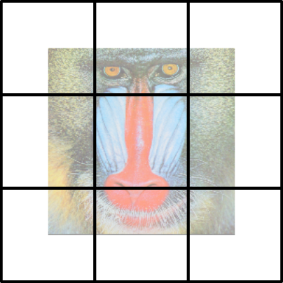

An overview of the Registration framework
This is a bit of an overview of the main concepts that underlie the overall registration framework. RegisterCore itself only contains low-level utilities for working with "mismatch data," as well as a few miscellaneous utilities.
Mismatch
Mismatch refers to the mean-square pixelwise difference between two images of the same size. The mismatch is computed from two images, called fixed and moving. Suppose that fixed and moving are grayscale two-dimensional images of size m-by-n. Computing the mismatch D for a zero-pixel shift would result in a single number; computing for shift by one pixel along the first coordinate (a shift of (1,0)) would result in a different number. Using a maxshift of (3,4), we could store the mismatch for all possible shifts in an array D of size (7,9).
The RegisterMismatch package contains a function
D = mismatch(fixed, moving, maxshift; normalization=:intensity)It computes the result of all translations by an integer number of pixels within a range -maxshift[i]:maxshift[i] along coordinate i.
Let's do a simple example. Suppose your image data look like this:
julia> img = [0 0 0 0 0;
0 0 1 0 0;
0 2 1 1 0;
0 0 3 0 0;
0 0 0 0 0]
5×5 Array{Int64,2}:
0 0 0 0 0
0 0 1 0 0
0 2 1 1 0
0 0 3 0 0
0 0 0 0 0Let's compute the mismatch of this image as we shift it relative to itself. Here we'll do this for shifts from -2 to 2 along each coordinate. For ease of display let's convert the output to integer format, though in practical work there would be no particular reason to do so:
julia> using RegisterCore, RegisterMismatch
julia> D = round.(NumDenom{Int}, mismatch(img, img, (2,2)))
5×5 CenterIndexedArrays.CenterIndexedArray{NumDenom{Int64},2,Array{NumDenom{Int64},2}} with indices SymRange(2)×SymRange(2):
NumDenom(17,17) NumDenom(22,22) NumDenom(16,22) NumDenom(22,22) NumDenom(17,17)
NumDenom(27,27) NumDenom(18,32) NumDenom(24,32) NumDenom(22,32) NumDenom(27,27)
NumDenom(23,27) NumDenom(26,32) NumDenom(0,32) NumDenom(26,32) NumDenom(23,27)
NumDenom(27,27) NumDenom(22,32) NumDenom(24,32) NumDenom(18,32) NumDenom(27,27)
NumDenom(17,17) NumDenom(22,22) NumDenom(16,22) NumDenom(22,22) NumDenom(17,17)This looks a little complicated, so let's walk through the pieces.
CenterIndexedArray
Shift data are stored in a type called a CenterIndexedArray, in which indexing is performed relative to the center. Consequently, D[0,0] (the center point) would correspond to the mismatch between fixed and moving without any translational shift. D[1,0], displaced from the center by (1,0), represents the mismatch for a single-pixel shift of moving along the first coordinate. Likewise, D[-1,0] corresponds to an identical shift in the opposite direction.
NumDenom
Mismatch computations actually return two numbers, conventionaly called num and denom packed into a type called NumDenom. num represents the "numerator" of the mismatch, and always holds the sum-of-squared-differences. In our example above, you can check
julia> D[1,0].num
24
julia> sum((img[1:end-1,:] - img[2:end,:]).^2)
24One key thing to note is that this sum-of-squared-differences includes only overlapping pixels. In the example above, D[2,0] is NumDenom(16, 22), and the 16 comes from
julia> sum((img[1:end-2,:] - img[3:end,:]).^2)
16If you look at how we defined img, the pixel with value 3 is included in img[3:end,:] but omitted from img[1:end-2,:]. If all you did was pay attention to the value of D[2,0].num, you might conclude that a shift of 2,0 is better than a shift of 1,0, even though the latter is closer to the true ideal of 0,0.
denom can be used for normalizing these differences, and can follow one of two conventions. :pixel normalization returns the number of valid pixels in the overlap region, including the effects of any shift; for a shift of (0,0) that would be m*n, but for a shift of (1,0) it would be (m-1)*n, because we clip one row of each image. :intensity normalization computes the sum-of-square intensities within the overlap region. We can check that directly for our example above:
julia> D[1,0].denom
32
julia> sum(img[1:end-1,:].^2 + img[2:end,:].^2)
32mismatch uses a default normalization of :intensity, because that makes the overall ratio num/denom a dimensionless quantity that does not depend on the brightness of your illumination or the units used to report intensities.
While one might initially imagine returning the ratio num/denom directly–-thus computing the fractional square difference–-there are several reasons to return num and denom separately:
- If the shift is so large that there are no pixels of overlap between
fixedandmoving, bothnumanddenomshould be zero. However, becausenumanddenomare generally computed by Fourier methods, there will be roundoff error (the reason we calledroundin the example above), and therefore their ratio can oscillate crazily. Returning them separately allows you to control the threshold for what is considered "signal" or "noise" (seetruncatenoise!and related functions below). Indeed, by appropriate choice of threshold you can require a minimum finite overlap, for example in terms of numbers of pixels (for:pixelnormalization) or amount of image intensity (for:intensitynormalization). A particularly robust strategy is to use a threshold that is some fixed fraction of the total sum-squared power, e.g., with:intensitynormalization,0.25*D[0,0].denomwould insist on shifts that achieve overap of at least 25% of the total power in thefixedandmovingimages. - For sub-pixel registration, one might imagine interpolating the mismatch values to positions between grid points. If we worked directly with the ratio
num/denom, shifts where these two values are pure noise (due to little overlapping power) would contaminate adjacent shifts that are not noise. By separately interpolatingnumanddenomand then forming their ratio, we provide the opportunity for well-determined mismatch values to overwhelm the noise from shifts whose mismatch ratios are meaningless (i.e.,(bignum + noisenum)/(bigdenom + noisedenom)is robust and nearly independent of the tiny noise contribution, whereasbignum/bigdenom + noisenum/noisedenomis likely to be meaningless). - Mathematically, "apertured" (block) computation involves sums of
numanddenomarrays separately (see below).
To support interpolation and other operations, it is most efficient to give NumDenom objects an algebra like a 2-vector (see NumDenom). This badly violates any pretense that nd is equivalent to nd.num/nd.denom. Consequently, the absence of a convert(Float64, nd) operation (which often gets called "automatically") is deliberate; use ratio or manual operations if you do want to "instantiate" them as a ratio.
Apertured mismatch: computing mismatch in blocks
Mismatch can be computed as a whole, or over apertures. The basic concept behind apertures is simple: given that an image may deform differently in different portions of space, restrict the mean-square-error computation to a local group of pixels.
Currently, apertures are arranged in a grid, although this may change in the future. Conceptually, if you want a (2,2) grid of blocks, you break the fixed and moving images up into quadrants and compute the mismatch separately for each quadrant. The actual implementation is a bit more complex, but also a bit more useful:
- Apertures are not "clipped" before computing the mismatch as a function of shift; instead, clipping at boundaries effectively happens after shifting. This allows one to use all the information available in both images.
- One might naively assume that, when using a
gridsizeof (3,3), you might split the image up like this:

Instead, this suite of packages uses apertures like this:

In each aperture, the data used for comparison are symmetric around the block center. As a consequence, the [1,1] aperture has 3/4 of its data (upper-left, upper-right, and lower-left quadrants) missing. By contrast, the [2,2] aperture does not have any missing data, and by default the [2,2] aperture includes 9/16 = (3/4)^2 of the pixels in the image (with the boundary at the halfway point between block centers). The motivation for this convention is that it reduces the need to extrapolate shifts, because the aperture centers span the entire fixed image.
When the apertures are arranged in a grid pattern, the mismatch arrays for each aperture can be stored in an array-of-arrays. The "inner" arrays have type CenterIndexedArray{NumDenom{T}} and are indexed by shifts (of either sign). The "outer" array is indexed in conventional Julia style (starting at 1), where the index represents the grid block.
A deformation grid is represented as one shift for each aperture. To support sub-pixel registration, the mismatch data are interpolated.
If you break the image up into blocks, each with its own mismatch array Ds[I], then the total sum of squared differences for a shift of (0, 0) is
sum(D[0,0].num for D in Ds)and the total normalization is
sum(D[0,0].denom for D in Ds)Consequently the num/denom ratio should be computed after summing all the individual contributions to the numerator and denominator.
NaN values
Any pixels with NaN values are omitted from mismatch computation, for both the numerator and denominator. (Most of this framework was written long before Julia had developed missing.) This is treated quite differently from filling NaNs with zero; instead, it's as if those pixels simply don't exist. This provides several nice features:
- You can register a smaller image to a larger one by padding the smaller image with NaN. The registration will not be affected by the fact that there's an "edge" at the padding location.
- You can re-register a warped moving image to the fixed image (hoping to further improve the registration), and not worry about the fact that the edges of the warped image likely have NaNs.
- You can mark "bad pixels" produced by your camera.